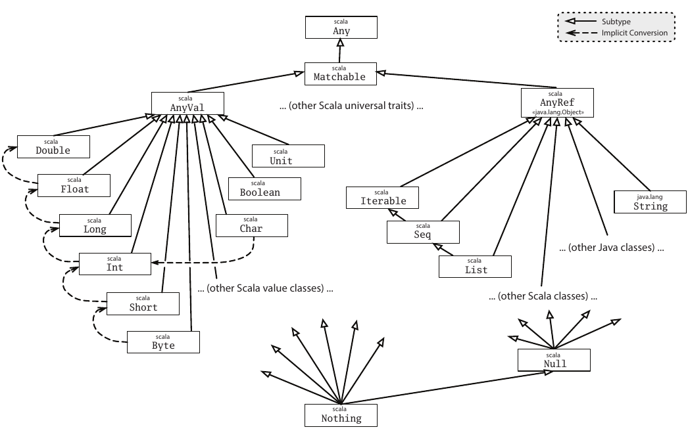
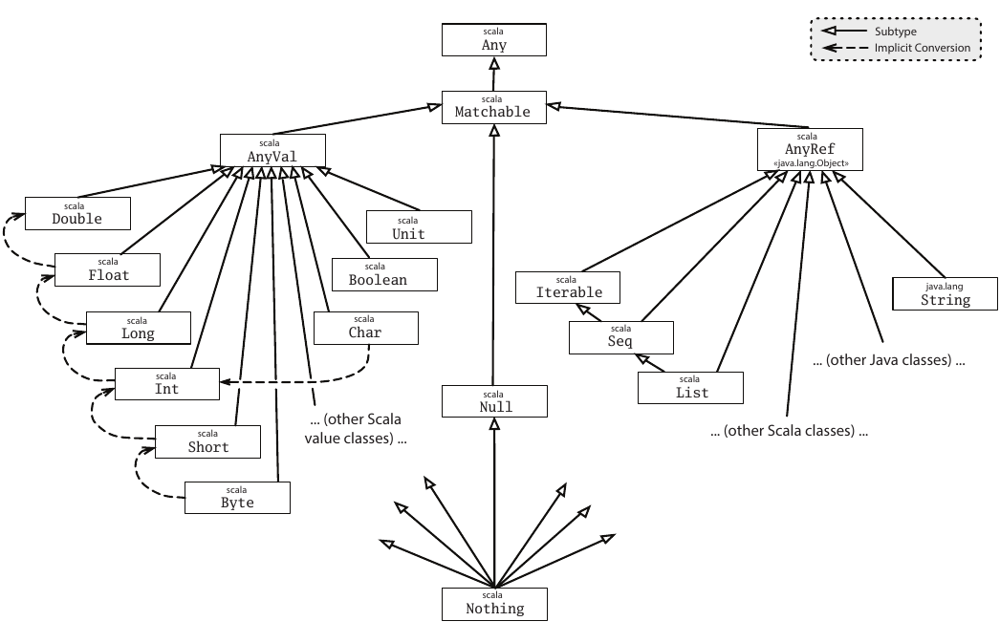

Explicit Nulls
Explicit nulls is an opt-in feature that modifies the Scala type system, which makes reference types (anything that extends AnyRef) non-nullable.
This means the following code will no longer typecheck:
val x: String = null // error: found `Null`, but required `String`
Instead, to mark a type as nullable we use a union type
val x: String | Null = null // ok
A nullable type could have null value during runtime; hence, it is not safe to select a member without checking its nullity.
x.trim // error: trim is not member of String | Null
Explicit nulls are enabled via a -Yexplicit-nulls flag.
Read on for details.
New Type Hierarchy
Originally, Null is a subtype of all reference types.

When explicit nulls is enabled, the type hierarchy changes so that Null is only a subtype of Any and Matchable, as opposed to every reference type, which means null is no longer a value of AnyRef and its subtypes.
This is the new type hierarchy:

After erasure, Null remains a subtype of all reference types (as forced by the JVM).
Working with Null
To make working with nullable values easier, we propose adding a few utilities to the standard library. So far, we have found the following useful:
-
An extension method
.nnto "cast away" nullabilityextension [T](x: T | Null) inline def nn: T = assert(x != null) x.asInstanceOf[T]This means that given
x: String | Null,x.nnhas typeString, so we can call all the usual methods on it. Of course,x.nnwill throw a NPE ifxisnull.Don't use
.nnon mutable variables directly, because it may introduce an unknown type into the type of the variable. -
An
unsafeNullslanguage feature.When imported,
T | Nullcan be used asT, similar to regular Scala (without explicit nulls).See UnsafeNulls section for more details.
Unsoundness
The new type system is unsound with respect to null. This means there are still instances where an expression has a non-nullable type like String, but its value is actually null.
The unsoundness happens because uninitialized fields in a class start out as null:
class C:
val f: String = foo(f)
def foo(f2: String): String = f2
val c = new C()
// c.f == "field is null"
The unsoundness above can be caught by the compiler with the option -Wsafe-init. More details can be found in safe initialization.
Equality
We don't allow the double-equal (== and !=) and reference (eq and ne) comparison between AnyRef and Null anymore, since a variable with a non-nullable type cannot have null as value. null can only be compared with Null, nullable union (T | Null), or Any type.
For some reason, if we really want to compare null with non-null values, we have to provide a type hint (e.g. : Any).
val x: String = ???
val y: String | Null = ???
x == null // error: Values of types String and Null cannot be compared with == or !=
x eq null // error
"hello" == null // error
y == null // ok
y == x // ok
(x: String | Null) == null // ok
(x: Any) == null // ok
Java Interoperability and Flexible Types
When dealing with reference types from Java, it's essential to address the implicit nullability of these types. The most accurate way to represent them in Scala is to use nullable types, though working with lots of nullable types directly can be annoying. To streamline interactions with Java libraries, we introduce the concept of flexible types.
The flexible type, denoted by T?, functions as an abstract type with unique bounds: T | Null ... T, ensuring that T | Null <: T? <: T. The subtyping rule treats a reference type coming from Java as either nullable or non-nullable depending on the context. This concept draws inspiration from Kotlin's platform types. By relaxing null checks for such types, Scala aligns its safety guarantees with those of Java. Notably, flexible types are non-denotable, meaning users cannot explicitly write them in the code; only the compiler can construct or infer these types.
Consequently, a value with a flexible type can serve as both a nullable and non-nullable value. Additionally, both nullable and non-nullable values can be passed as parameters with flexible types during function calls. Invoking the member functions of a flexible type is allowed, but it can trigger a NullPointerException if the value is indeed null during runtime.
// Considering class J is from Java
class J {
// Translates to def f(s: String?): Unit
public void f(String s) {
}
// Translates to def g(): String?
public String g() {
return "";
}
}
// Use J in Scala
def useJ(j: J) =
val x1: String = ""
val x2: String | Null = null
j.f(x1) // Passing String to String?
j.f(x2) // Passing String | Null to String?
j.f(null) // Passing Null to String?
// Assign String? to String
val y1: String = j.g()
// Assign String? to String | Null
val y2: String | Null = j.g()
// Calling member functions on flexible types
j.g().trim().length()
Upon loading a Java class, whether from source or bytecode, the Scala compiler dynamically adjusts the type of its members to reflect nullability. This adjustment involves adding flexible types to the reference types of fields, as well as the argument types and return types of methods
We illustrate the rules with following examples:
-
The first two rules are easy: we nullify reference types but not value types.
class C { String s; int x; }==>
class C: val s: String? val x: Int -
We nullify type parameters because in Java a type parameter is always nullable, so the following code compiles.
class C<T> { T foo() { return null; } }==>
class C[T] { def foo(): T? } -
We can reduce the number of redundant nullable types we need to add. Consider
class Box<T> { T get(); } class BoxFactory<T> { Box<T> makeBox(); }==>
class Box[T] { def get(): T? } class BoxFactory[T] { def makeBox(): Box[T]? }Suppose we have a
BoxFactory[String]. Notice that callingmakeBox()on it returns aBox[T]?, not aBox[T?]?. This seems at first glance unsound ("What if the box itself hasnullinside?"), but is sound because callingget()on aBox[String]returns aString?.Notice that we need to patch all Java-defined classes that transitively appear in the argument or return type of a field or method accessible from the Scala code being compiled. Absent crazy reflection magic, we think that all such Java classes must be visible to the Typer in the first place, so they will be patched.
-
We will patch the type arguments if the generic class is defined in Scala.
class BoxFactory<T> { Box<T> makeBox(); // Box is Scala-defined List<Box<List<T>>> makeCrazyBoxes(); // List is Java-defined }==>
class BoxFactory[T]: def makeBox(): Box[T?]? def makeCrazyBoxes(): java.util.List[Box[java.util.List[T]?]]?In this case, since
Boxis Scala-defined, we will getBox[T?]?. This is needed because our nullability function is only applied (modularly) to the Java classes, but not to the Scala ones, so we need a way to tellBoxthat it contains a nullable value.The
Listis Java-defined, so we don't patch its type argument. But we still need to nullify its inside. -
We don't nullify simple literal constant (
final) fields, since they are known to be non-nullclass Constants { final String NAME = "name"; final int AGE = 0; final char CHAR = 'a'; final String NAME_GENERATED = getNewName(); }==>
class Constants: val NAME: String("name") = "name" val AGE: Int(0) = 0 val CHAR: Char('a') = 'a' val NAME_GENERATED: String | Null = getNewName() -
We don't patch a field nor to a return type of a method which is annotated with a
NotNullannotation.class C { @NotNull String name; @NotNull List<String> getNames(String prefix); // List is Java-defined @NotNull Box<String> getBoxedName(); // Box is Scala-defined }==>
class C: val name: String def getNames(prefix: String?): java.util.List[String] // we still need to nullify the paramter types def getBoxedName(): Box[String?] // we don't append `Null` to the outmost level, but we still need to nullify insideThe annotation must be from the list below to be recognized as
NotNullby the compiler. CheckDefinitions.scalafor an updated list.// A list of annotations that are commonly used to indicate // that a field/method argument or return type is not null. // These annotations are used by the nullification logic in // JavaNullInterop to improve the precision of type nullification. // We don't require that any of these annotations be present // in the class path, but we want to create Symbols for the // ones that are present, so they can be checked during nullification. @tu lazy val NotNullAnnots: List[ClassSymbol] = ctx.getClassesIfDefined( "javax.annotation.Nonnull" :: "edu.umd.cs.findbugs.annotations.NonNull" :: "androidx.annotation.NonNull" :: "android.support.annotation.NonNull" :: "android.annotation.NonNull" :: "com.android.annotations.NonNull" :: "org.eclipse.jdt.annotation.NonNull" :: "org.checkerframework.checker.nullness.qual.NonNull" :: "org.checkerframework.checker.nullness.compatqual.NonNullDecl" :: "org.jetbrains.annotations.NotNull" :: "lombok.NonNull" :: "io.reactivex.annotations.NonNull" :: Nil map PreNamedString)
Flexible types can be disabled by using -Yno-flexible-types flag. The ordinary union type | Null will be used instead.
Override check
When we check overriding between Scala classes and Java classes, the rules are relaxed for Null type with this feature, in order to help users to working with Java libraries.
Suppose we have Java method String f(String x), we can override this method in Scala in any of the following forms:
def f(x: String | Null): String | Null
def f(x: String): String | Null
def f(x: String | Null): String
def f(x: String): String
Note that some of the definitions could cause unsoundness. For example, the return type is not nullable, but a null value is actually returned.
Flow Typing
We added a simple form of flow-sensitive type inference. The idea is that if p is a stable path or a trackable variable, then we can know that p is non-null if it's compared with null. This information can then be propagated to the then and else branches of an if-statement (among other places).
Example:
val s: String | Null = ???
if s != null then
// s: String
// s: String | Null
assert(s != null)
// s: String
A similar inference can be made for the else case if the test is p == null
if s == null then
// s: String | Null
else
// s: String
== and != is considered a comparison for the purposes of the flow inference.
Logical Operators
We also support logical operators (&&, ||, and !):
val s: String | Null = ???
val s2: String | Null = ???
if s != null && s2 != null then
// s: String
// s2: String
if s == null || s2 == null then
// s: String | Null
// s2: String | Null
else
// s: String
// s2: String
Inside Conditions
We also support type specialization within the condition, taking into account that && and || are short-circuiting:
val s: String | Null = ???
if s != null && s.length > 0 then // s: String in `s.length > 0`
// s: String
if s == null || s.length > 0 then // s: String in `s.length > 0`
// s: String | Null
else
// s: String
Match Case
The non-null cases can be detected in match statements.
val s: String | Null = ???
s match
case _: String => // s: String
case _ =>
Mutable Variable
We are able to detect the nullability of some local mutable variables. A simple example is:
class C(val x: Int, val next: C | Null)
var xs: C | Null = C(1, C(2, null))
// xs is trackable, since all assignments are in the same method
while xs != null do
// xs: C
val xsx: Int = xs.x
val xscpy: C = xs
xs = xscpy // since xscpy is non-null, xs still has type C after this line
// xs: C
xs = xs.next // after this assignment, xs can be null again
// xs: C | Null
When dealing with local mutable variables, there are two questions:
-
Whether to track a local mutable variable during flow typing. We track a local mutable variable if the variable is not assigned in a closure. For example, in the following code
xis assigned to by the closurey, so we do not do flow typing onx.var x: String | Null = ??? def y = x = null if x != null then // y can be called here, which would break the fact val a: String = x // error: x is captured and mutated by the closure, not trackable -
Whether to generate and use flow typing on a specific use of a local mutable variable. We only want to do flow typing on a use that belongs to the same method as the definition of the local variable. For example, in the following code, even
xis not assigned to by a closure, we can only use flow typing in one of the occurrences (because the other occurrence happens within a nested closure).var x: String | Null = ??? def y = if x != null then // not safe to use the fact (x != null) here // since y can be executed at the same time as the outer block val _: String = x if x != null then val a: String = x // ok to use the fact here x = null
See more examples.
Currently, we are unable to track paths with a mutable variable prefix. For example, x.a if x is mutable.
Unsupported Idioms
We don't support:
-
flow facts not related to nullability (
if x == 0 then { // x: 0.type not inferred }) -
tracking aliasing between non-nullable paths
val s: String | Null = ??? val s2: String | Null = ??? if s != null && s == s2 then // s: String inferred // s2: String not inferred
UnsafeNulls
It is difficult to work with many nullable values, we introduce a language feature unsafeNulls. Inside this "unsafe" scope, all T | Null values can be used as T.
Users can import scala.language.unsafeNulls to create such scopes, or use -language:unsafeNulls to enable this feature globally (for migration purpose only).
Assume T is a reference type (a subtype of AnyRef), the following unsafe operation rules are applied in this unsafe-nulls scope:
-
the members of
Tcan be found onT | Null -
a value with type
Tcan be compared withT | NullandNull -
suppose
T1is not a subtype ofT2using explicit-nulls subtyping (whereNullis a direct subtype of Any), extension methods and implicit conversions designed forT2can be used forT1ifT1is a subtype ofT2using regular subtyping rules (whereNullis a subtype of every reference type) -
suppose
T1is not a subtype ofT2using explicit-nulls subtyping, a value with typeT1can be used asT2ifT1is a subtype ofT2using regular subtyping rules
Addtionally, null can be used as AnyRef (Object), which means you can select .eq or .toString on it.
The program in unsafeNulls will have a similar semantic as regular Scala, but not equivalent.
For example, the following code cannot be compiled even using unsafe nulls. Because of the Java interoperation, the type of the get method becomes T | Null.
def head[T](xs: java.util.List[T]): T = xs.get(0) // error
Since the compiler doesn’t know whether T is a reference type, it is unable to cast T | Null to T. A .nn need to be inserted after xs.get(0) by user manually to fix the error, which strips the Null from its type.
The intention of this unsafeNulls is to give users a better migration path for explicit nulls. Projects for Scala 2 or regular Scala 3 can try this by adding -Yexplicit-nulls -language:unsafeNulls to the compile options. A small number of manual modifications are expected. To migrate to the full explicit nulls feature in the future, -language:unsafeNulls can be dropped and add import scala.language.unsafeNulls only when needed.
def f(x: String): String = ???
def nullOf[T >: Null]: T = null
import scala.language.unsafeNulls
val s: String | Null = ???
val a: String = s // unsafely convert String | Null to String
val b1 = s.trim // call .trim on String | Null unsafely
val b2 = b1.length
f(s).trim // pass String | Null as an argument of type String unsafely
val c: String = null // Null to String
val d1: Array[String] = ???
val d2: Array[String | Null] = d1 // unsafely convert Array[String] to Array[String | Null]
val d3: Array[String] = Array(null) // unsafe
class C[T >: Null <: String] // define a type bound with unsafe conflict bound
val n = nullOf[String] // apply a type bound unsafely
Without the unsafeNulls, all these unsafe operations will not be type-checked.
unsafeNulls also works for extension methods and implicit search.
import scala.language.unsafeNulls
val x = "hello, world!".split(" ").map(_.length)
given Conversion[String, Array[String]] = _ => ???
val y: String | Null = ???
val z: Array[String | Null] = y
Binary Compatibility
Our strategy for binary compatibility with Scala binaries that predate explicit nulls and new libraries compiled without -Yexplicit-nulls is to leave the types unchanged and be compatible but unsound.